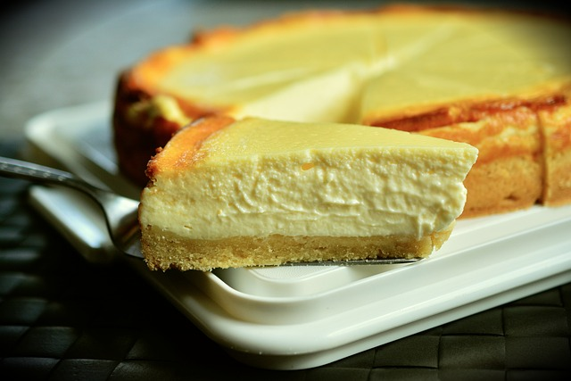

Cheescake
| 2 | Eier |
| 200 | gr Frischkäse 0,2% Fett |
| 200 | gr Joghurt 2% Fett |
| 500 | gr Magerquark 0,3% Fett |
| 1 | Pck Puddingpulver Vanille |
| 150 | gr Beerenmischung (gefroren) |
Zubereitung
Alle Zutaten zu einem Teig vermischen und in eine Backform geben
Die Beerenmischung als Topping auf den Cheescaketeig geben
Den Kuchen bei 200°C für 30-35 Minuten backen bis er durch ist